| img | nome | marca | seção | variantes | págs |
|---|
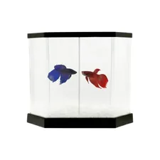 | Acqua Kit Jr Com Divisão (betta) | Vigo Flex | Acessórios | UN=00733 | [247] |
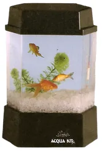 | Acqua Kit Jr Completo 5,5l - Com Luz - 127V | Vigo Flex | Acessórios | UN=00356 | [247] |
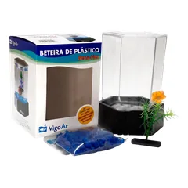 | Betta Flex Mini 600ML (kit Betteira) 01 W 2,5 W | Vigo Flex | Acessórios | 127 V=00131, UN=00137, 127 V=00530, 220 V=04310, 220 V=04311 | [247] |
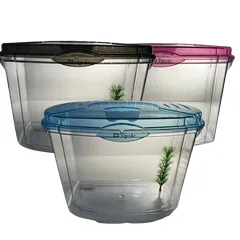 | Betta Flex Classic 4,2l Tampa Azul/rosa/preta 05 W 10 W | Vigo Flex | Acessórios | 127 V=00130, 127 V=00135, 220 V=04312, 220 V=04313, UN=08531 | [247] |
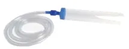 | Sifão Com 40CM Para Aquário - Completo | Vigo Flex | Acessórios | UN=05111 | [247] |
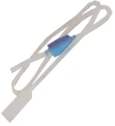 | Sifonador Com Bomba Manual | Vigo Flex | Acessórios | UN=01935 | [247] |
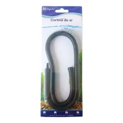 | Cortina de Ar | Vigo Flex | Acessórios | 30CM=01721, 60CM=01723 | [247] |
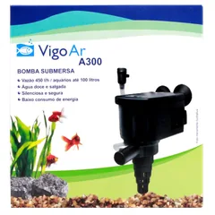 | Bomba Submersa A300 - 100L | Vigo Flex | Acessórios | 127 V=00144, 220 V=04308 | [247] |
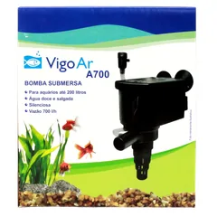 | Bomba Submersa A700 - 200L | Vigo Flex | Acessórios | 127 V=01334, 220 V=04309 | [247] |
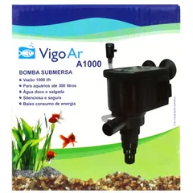 | Bomba Submersa A1000 - 300L | Vigo Flex | Acessórios | 127 V=05017, 220 V=06289 | [247] |
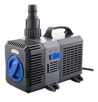 | Bomba Ctp 8000 127 V | Vigo Flex | Acessórios | UN=08532 | [247] |
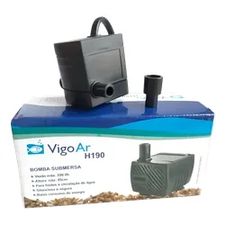 | Bomba Submersa Para Fonte H190 | Vigo Flex | Acessórios | 127 V=01701, 220 V=08415 | [247] |
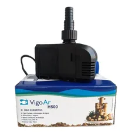 | Bomba Submersa Para Fonte H500 | Vigo Flex | Acessórios | 127 V=02942, 220 V=06573 | [247] |
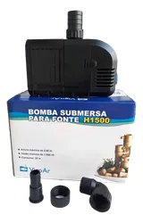 | Bomba Submersa Para Fonte H1000 | Vigo Flex | Acessórios | 127 V=02869, 220 V=06574 | [247] |
| Bomba Submersa Para Fonte H1500 | Vigo Flex | Acessórios | 127 V=02869 | [248] |
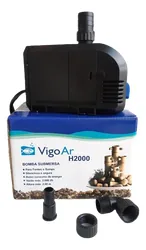 | Bomba Submersa Para Fonte H2000 | Vigo Flex | Acessórios | 127 V=01799, 220 V=04322 | [248] |
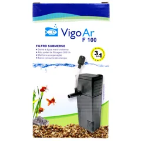 | Filtro Submerso F100 - 20L | Vigo Flex | Acessórios | 127 V=01335, 220 V=05865 | [248] |
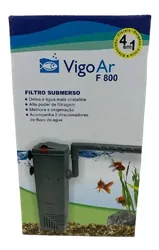 | Filtro Submerso F800 - 650l/h Com 2 Direcionadores de Fluxo | Vigo Flex | Acessórios | 220 V=06381 | [248] |
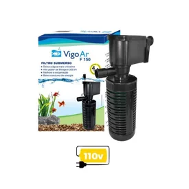 | Filtro Submerso Turbo Clear - F150 - 50L | Vigo Flex | Acessórios | 127 V=00143, 220 V=04315 | [248] |
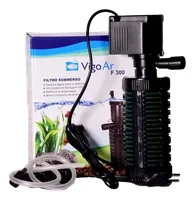 | Filtro Submerso Turbo Clear - F300 - 100L | Vigo Flex | Acessórios | 127 V=00142, 220 V=04316 | [248] |
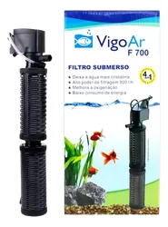 | Filtro Submerso Turbo Clear - F700 - 200L | Vigo Flex | Acessórios | 127 V=00155, 220 V=04317 | [248] |
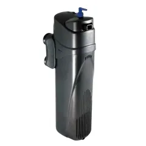 | Filtro Interno Com U.v. - U800 L/h | Vigo Flex | Acessórios | 127 V=02123, 220 V=06572 | [248] |
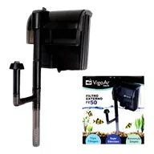 | Filtro Externo Fe 50 - 50L | Vigo Flex | Acessórios | 127 V=02120, 220 V=04319 | [248] |
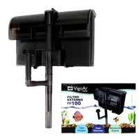 | Filtro Externo Fe 100 - 100L Canister V1000 Filtro Hw 302 Canister 1400 Com Uv Filtro Hw 303B | Vigo Flex | Acessórios | 127 V=02122, 127 V=03164, 220 V=04320, 127 V=05801, 220 V=06571 | [248] |
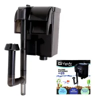 | Filtro Externo Fe 25 - 25L | Vigo Flex | Acessórios | 127 V=02119, 220 V=04318 | [248] |
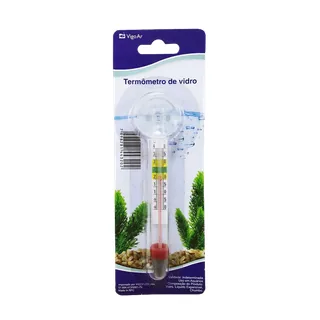 | Termômetro Fixo Com Ventosa | Vigo Flex | Acessórios | UN=00163 | [248] |
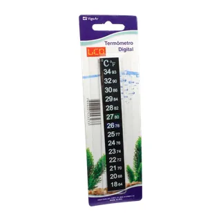 | Termômetro de Fita Digital | Vigo Flex | Acessórios | UN=01720 | [248] |
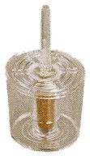 | Filtro Com Peso Nº1 - Redondo | Vigo Flex | Acessórios | UN=00147 | [248] |
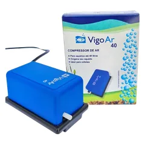 | Compressor Vigo Ar 40 Litros | Vigo Flex | Acessórios | 127 V=03999, 220 V=07264 | [249] |
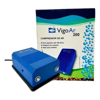 | Compressor Vigo Ar 200 Plus (130 Litros - Duas Saídas) | Vigo Flex | Acessórios | 127 V=05192 | [249] |
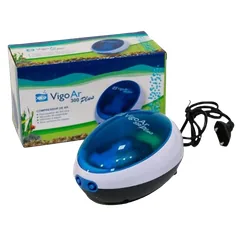 | Compressor Vigo Ar 300 Plus (200 Litros - Duas Saídas) | Vigo Flex | Acessórios | 127 V=05864 | [249] |
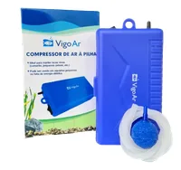 | Compressor Vigo Ar À Pilha | Vigo Flex | Acessórios | UN=05298 | [249] |
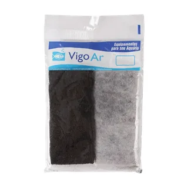 | Refil Para Bomba Submersa - F150 - 2UN | Vigo Flex | Acessórios | UN=00367 | [249] |
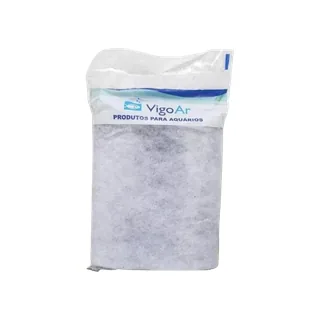 | Refil Para Bomba Submersa - F300 - 2UN | Vigo Flex | Acessórios | UN=00368 | [249] |
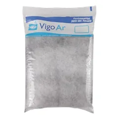 | Refil Para Bomba Submersa - F700 - 3UN | Vigo Flex | Acessórios | UN=00369 | [249] |
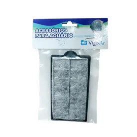 | Refil Para Fe50 | Vigo Flex | Acessórios | UN=02391 | [249] |
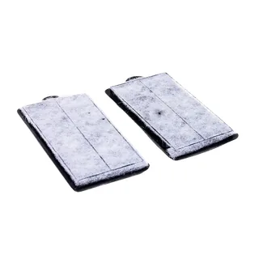 | Refil Para E600/fe100 2 Peças | Vigo Flex | Acessórios | UN=01805 | [249] |
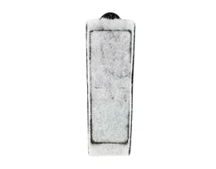 | Refil Para Fe75 | Vigo Flex | Acessórios | UN=02392 | [249] |
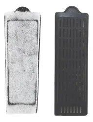 | Refil Para E300/fe25 | Vigo Flex | Acessórios | UN=01804 | [249] |
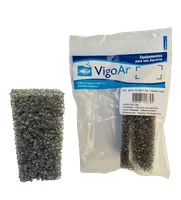 | Refil Espuma Para Filtro Interno - F100 | Vigo Flex | Acessórios | UN=05110 | [249] |
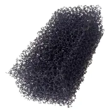 | Refil Espuma | Vigo Flex | Acessórios | FE25=06684, FE50=06685 | [249] |
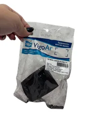 | Refil Carvão Para Aquário | Vigo Flex | Acessórios | F200=05884, F400=05885, F800=05886 | [249] |
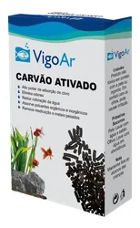 | Carvão Ativado Peletizado - 250G | Vigo Flex | Acessórios | UN=04611 | [249] |
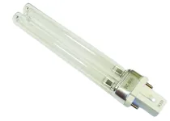 | Lâmpada Uv 9W 127 V | Vigo Flex | Acessórios | UN=03938 | [249] |
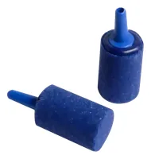 | Pedra Porosa Nº3 | Vigo Flex | Acessórios | UN=01797 | [250] |
 | Limpador Espuma 35CM Com Cabo P/aquário | Vigo Flex | Acessórios | UN=05020 | [250] |
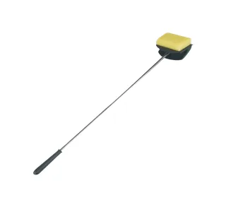 | Limpador Espuma 50CM Com Cabo P/aquário | Vigo Flex | Acessórios | UN=01710, UN=05108 | [250] |
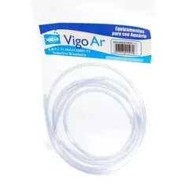 | Mangueira Cristal 2 Metros | Vigo Flex | Acessórios | UN=00152, UN=01786 | [250] |
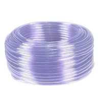 | Mangueira Cristal Rolo - 100 Metros | Vigo Flex | Acessórios | UN=02118 | [250] |
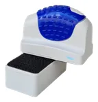 | Mangueira Silicone Transparente - 3 Metros | Vigo Flex | Acessórios | UN=00153 | [250] |
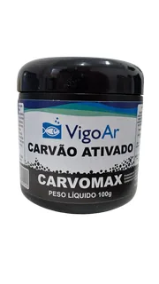 | Carvomax (carvão Ativado) | Vigo Flex | Acessórios | 100G=03424, 250G=03425, 500G=03426 | [250] |
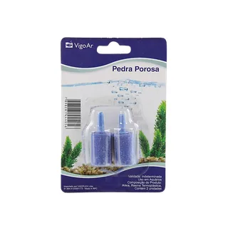 | Pedra de Ar 2 Unidades | Vigo Flex | Acessórios | UN=03009 | [250] |
| Pedra de Ar Mini Long | Vigo Flex | Acessórios | 10 CM=03011, 20 CM=03012 | [250] |
| Lã Acrílica 25 X 40 Cm | Vigo Flex | Acessórios | UN=01795 | [250] |
| Lã Acrílica 40 X 75 Cm | Vigo Flex | Acessórios | UN=01796 | [250] |
| Lã Acrílica 15 X 40 Cm | Vigo Flex | Acessórios | UN=00151 | [250] |
| Rede Nº 8 - Black Para Aquário | Vigo Flex | Acessórios | UN=08176 | [251] |
| Rede Nº 3 Para Aquário | Vigo Flex | Acessórios | UN=05109 | [251] |
 | Rede Nº 4 Para Aquário | Vigo Flex | Acessórios | UN=01801 | [251] |
 | Rede Nº 6 Para Aquário | Vigo Flex | Acessórios | UN=01802 | [251] |
| Termostato Com Aquecedor Submerso - 50 W | Vigo Flex | Acessórios | 127 V=01149, 220 V=04323 | [251] |
| Termostato Com Aquecedor Submerso - 100 W | Vigo Flex | Acessórios | 127 V=01150, 220 V=04324 | [251] |
| Termostato Com Aquecedor Submerso - 200 W | Vigo Flex | Acessórios | 127 V=01151, 220 V=04325 | [251] |
| Limpador Magnético 4MM | Vigo Flex | Acessórios | UN=01676 | [251] |
| Limpador Magnético Flutuante Premium - 6MM | Vigo Flex | Acessórios | UN=00153 | [251] |
| Planta Plástica 10 Cm | Vigo Flex | Acessórios | UN=01715 | [251] |
| Planta Plástica 20 Cm | Vigo Flex | Acessórios | UN=01716 | [251] |
| Planta Plástica 30 Cm | Vigo Flex | Acessórios | UN=01717 | [251] |
| Planta Plástica 40 Cm | Vigo Flex | Acessórios | UN=01718 | [251] |
| Planta Plástica 60 Cm | Vigo Flex | Acessórios | UN=05645 | [251] |
| Planta Coqueiro Mini Duplo | Vigo Flex | Acessórios | UN=06422 | [251] |
| Planta Coqueiro Duplo | Vigo Flex | Acessórios | UN=06421 | [251] |
| Enfeite Ponte Com Planta | Vigo Flex | Acessórios | UN=05599 | [252] |
| Enfeite Halloween Resina | Vigo Flex | Acessórios | UN=05018 | [252] |
| Escova Rastelo | Vigo Flex | Acessórios | UN=00168 | [252] |
| Escova Com Alça Regulável | Vigo Flex | Acessórios | UN=00165 | [252] |
| Banheiro Toilette Gats | Vigo Flex | Acessórios | UN=03547 | [252] |
| Bandeja Para Gato Ecopet | Vigo Flex | Acessórios | UN=03548 | [252] |
| Tapete Dinner Clean Para Cães e Gatos | Vigo Flex | Acessórios | UN=00975 | [252] |
| Comedouro Para Gato Premium - Anti Stress | Vigo Flex | Acessórios | UN=02763 | [252] |
 | Ecopet Comedouro Para Cães Luxo - Filhote | Vigo Flex | Acessórios | UN=00604, UN=03545 | [252] |
| Comedouro Para Cães Luxo - Pequeno | Vigo Flex | Acessórios | UN=00968 | [252] |
| Gato Luxo - Bistrô Comedouro Para Cães Luxo - Médio | Vigo Flex | Acessórios | UN=00970, UN=05745 | [252] |
| Comedouro Para Cães Luxo - Grande | Vigo Flex | Acessórios | UN=01675 | [252] |
| Comedouro Para Cães Vigo - Filhote - Nº1 | Vigo Flex | Acessórios | UN=01683 | [252] |
| Enfeite Peixe Plástico 1 Unidade - Grande | Vigo Flex | Acessórios | UN=02434 | [252] |
| Comedouro Para Cães Vigo - Pequeno - Nº2 | Vigo Flex | Acessórios | UN=01684 | [253] |
| Comedouro Para Cães Vigo - Médio - Nº3 | Vigo Flex | Acessórios | UN=01685 | [253] |
| Comedouro Para Cães Vigo - Grande - Nº4 | Vigo Flex | Acessórios | UN=01686 | [253] |
| Comedouro Para Cães Vigo - Extra Grande - Nº5 | Vigo Flex | Acessórios | UN=01687 | [253] |
| Comedouro Duplo Vigo - Luxo | Vigo Flex | Acessórios | UN=01689 | [253] |
| Comedouro e Bebedouro Duplo - Ecopet - Vermelho | Vigo Flex | Acessórios | 1600ML=05451 | [253] |
| Comedouro e Bebedouro Duplo - Ecopet - Rosa | Vigo Flex | Acessórios | 1600ML=05452 | [253] |
| Comedouro e Bebedouro Duplo - Ecopet - Azul | Vigo Flex | Acessórios | 1600ML=05453 | [253] |
| Vermelho Amarelo Bebedouro Ou Comedouro Automático 1,8 Litros / 1,1kg | Vigo Flex | Acessórios | 04474 - 04475 - 04800=05358 | [253] |
| Bebedouro Pelo Longo Vigo - Pequeno | Vigo Flex | Acessórios | AZUL=03345, ROSA=03346 | [253] |
 | Bebedouro Pelo Longo Vigo - Grande | Vigo Flex | Acessórios | AZUL=03347, ROSA=03348 | [253] |
| Bebedouro Pelo Longo Vigo - Médio | Vigo Flex | Acessórios | AZUL=08234 | [253] |
| Guia Retrátil Pet Flex 2 Metros - 5KG | Vigo Flex | Acessórios | UN=00170 | [253] |
| Guia Retrátil Pet Flex Premium - 3 Metros - 7KG | Vigo Flex | Acessórios | UN=00973 | [253] |
| Guia Retrátil Classic 3 Metros - 15KG | Vigo Flex | Acessórios | UN=00170 | [253] |
| Guia Retrátil Classic 3 Metros - 18KG | Vigo Flex | Acessórios | UN=06628 | [254] |
| Guia Retrátil Premium 3 Metros - 20KG | Vigo Flex | Acessórios | UN=00974 | [254] |
| Brinquedo Pneu Médio Para Cães - 632 | Vigo Flex | Acessórios | UN=05674 | [254] |
| Brinquedo Pneu Grande Para Cães - 633 | Vigo Flex | Acessórios | UN=05673 | [254] |
| Dental Bone Pneu Vigo Flex | Vigo Flex | Acessórios | 15KG=05516, 22KG=05517 | [254] |
| Odontopet Bola Laranja Para Gatos Com Catnip Vigo Flex | Vigo Flex | Acessórios | UN=05518 | [254] |
| Odontopet Cat Laço Para Gatos Com Catnip Vigo Flex | Vigo Flex | Acessórios | UN=05519 | [254] |
| Odontopet Cat Mouse Para Gatos Com Catnip Vigo Flex | Vigo Flex | Acessórios | UN=05520 | [254] |
| Odontopet Dental Estrela Corda - 965 | Vigo Flex | Acessórios | 15KG=08856 | [254] |
| Odontopet Dental Bone Vigo Flex | Vigo Flex | Acessórios | 7KG=03812, 15KG=03813, 22KG=03814 | [254] |
| Odontopet Dental Fresbee - 963 | Vigo Flex | Acessórios | 15KG=08859 | [254] |
| Azul Vermelha Guia Soft Fita 3 Metros - 25KG | Vigo Flex | Acessórios | 03798 - 03790 - 03791=06012 | [254] |
| Odontopet Dental Flat Corda - 764 | Vigo Flex | Acessórios | 7KG=08857 | [255] |
| Odontopet Dental Flat Corda - 765 | Vigo Flex | Acessórios | 15KG=08858 | [255] |
| Odontopet Dura Bone Tronco Para Cães | Vigo Flex | Acessórios | 15KG=05025, 22KG=05026 | [255] |
| Odontopet Dental Tubo - 767 | Vigo Flex | Acessórios | 7KG=08860 | [255] |
| Odontopet Dental Tubo - 768 | Vigo Flex | Acessórios | 15KG=08861 | [255] |
| Odontopet Dental Tubo - 769 | Vigo Flex | Acessórios | 22KG=08862 | [255] |
| Odontopet Dura Bone Big Osso - Vigo Flex | Vigo Flex | Acessórios | 15KG=06831 | [255] |
| Odontopet Dura Bone Vigo Flex | Vigo Flex | Acessórios | 15KG=03807, 22KG=03808, 7KG=03815 | [255] |
| Odontopet Dura Bone Fêmur - Vigo Flex | Vigo Flex | Acessórios | 22KG=05523 | [255] |
| Odontopet Dura Bone T. Bone Monster - 264 | Vigo Flex | Acessórios | UN=08002 | [255] |
| Odontopet Dura Bone T. Bone - 809 | Vigo Flex | Acessórios | 22KG=08459 | [255] |
| Odontopet Dura Lagosta M - 127 | Vigo Flex | Acessórios | 15KG=08765 | [255] |
| Odontopet Dura Lagosta G - 128 | Vigo Flex | Acessórios | 22KG=08766 | [255] |
| Odontopet Flexi Bone Vigo Flex | Vigo Flex | Acessórios | 7KG=03809, 15KG=03810, 22KG=03811 | [256] |
| Odontopet Dura Dog Wood | Vigo Flex | Acessórios | 22KG=08001 | [256] |
| Odontopet Junior Spinner Pequeno Para Cães Vigo Flex | Vigo Flex | Acessórios | UN=05521 | [256] |
| Odontopet Junior Super Médio Para Cães Vigo Flex | Vigo Flex | Acessórios | UN=05522 | [256] |
| Odontopet Flexi Bola Americana Para Cães | Vigo Flex | Acessórios | 15KG=05027 | [256] |
| Odontopet Flexi Bola Espacial Para Cães | Vigo Flex | Acessórios | 7KG=05028 | [256] |
| Odontopet Dura Dog Wishbone | Vigo Flex | Acessórios | 22KG=08003 | [256] |
| Odontopet Flexi Argola Duo - 271 | Vigo Flex | Acessórios | 22KG=08863 | [256] |
| Aquecedor Master 220V Termostato Com Aquecedor Master 220V | Master | Acessórios | 20 W=07774, 50 W=07775, 75 W=07776, 100 W=07777, 125 W=07778, 2,5 W=08375, 5 W=08376, 10 W=08377 | [257] |
| Termostato Com Aquecedor Master 127V | Master | Acessórios | 50 W=03647, 75 W=03648, 100 W=03649, 125 W=03650 | [257] |
| P - 2KG G - 5KG Comedouro Automático Galvanizado - Reforçado - Para Cães | Funiarte | Acessórios | UN=05760, UN=05762 | [258] |
| 3KG 10KG Comedouro Tubular Galvanizado - Reforçado - Para Aves | Funiarte | Acessórios | UN=05755, UN=05757 | [258] |
| 5KG 20KG | Funiarte | Acessórios | UN=05756, UN=06355 | [258] |
| Comedouro Calha Horizontal Galvanizado - Reforçado 300G 500G 1KG 2KG Concha Para Cereais Galvanizada - Reforçada | Funiarte | Acessórios | 30CM - 05752 60CM - 05753 90CM=05754, UN=05764, UN=05765, UN=05766, UN=05767 | [258] |
| Máquina de Tosa Agcb2 Bivolt - Azul (23325) | Tosa Brasil | Acessórios | UN=06233 | [259] |
| Máquina de Tosa Agcb2 Bivolt - Borgonha (23370) | Tosa Brasil | Acessórios | UN=06235 | [259] |
| Máquina de Tosa Agcb2 Bivolt - Preta (25140) | Tosa Brasil | Acessórios | UN=06499 | [259] |
| Lâmina Andis 5FC Ultraedge (64122) | Tosa Brasil | Acessórios | UN=05406 | [259] |
| Lâmina Andis 30 Ultraedge (64075) | Tosa Brasil | Acessórios | UN=05402 | [259] |
| Lâmina Andis 15 Ultraedge (64072) | Tosa Brasil | Acessórios | UN=05403 | [259] |
| Lâmina Andis 10 Ultraedge (64071) | Tosa Brasil | Acessórios | UN=05404 | [259] |
| Lâmina Andis 7FC Ultraedge (64121) | Tosa Brasil | Acessórios | UN=05405 | [259] |
| Lâmina Andis 4FC Ultraedge (64123) | Tosa Brasil | Acessórios | UN=05407 | [259] |
| Lâmina Andis 3 3/4fc Ultraedge (64135) | Tosa Brasil | Acessórios | UN=05408 | [259] |
| Lâmina Andis ¾ Ht | Tosa Brasil | Acessórios | UN=05410, UN=63980 | [259] |
| Lâmina Andis 4 Ultraedge (64090) | Tosa Brasil | Acessórios | UN=05660 | [259] |
| Lâmina Andis ⅝ Ht | Tosa Brasil | Acessórios | UN=05409, UN=64930 | [259] |
| Lâmina Andis 7FT Ceramicedge (00387) | Tosa Brasil | Acessórios | UN=08008 | [259] |
| Lâmina Andis 9 Ultraedge (64120) | Tosa Brasil | Acessórios | UN=06393 | [259] |
| Lâmina Andis 50 Ultraedge (64185) | Tosa Brasil | Acessórios | UN=07303 | [259] |
| Pente 10" Andis | Tosa Brasil | Acessórios | UN=06547, UN=65725 | [260] |
| Pente Removedor de Sujeiras/pulgas (66060) | Tosa Brasil | Acessórios | UN=08007 | [260] |
| Conjunto Pente Adaptador Pequeno - Andis - 9 Peças | Tosa Brasil | Acessórios | UN=05470, UN=12860 | [260] |
| Alicate Grande Andis Verde e Branco (65700) | Tosa Brasil | Acessórios | UN=05466 | [260] |
| Lingueta Para Transmissão Andis (20658) | Tosa Brasil | Acessórios | UN=08004 | [260] |
| Óleo Lubrificante Para Lâminas Andis - 118ML (12501) | Tosa Brasil | Acessórios | UN=08612 | [260] |
| Tosquiadeira Maxishear F7 de Ovinos 380W - 220V | Walmur | Acessórios | UN=07324, UN=11491 | [261] |
| Tosquiadeira Para Cães Smallclip 80W Com Bateria - 18,5 Vcc (13334) | Walmur | Acessórios | UN=07323 | [261] |
| Tosquiadeira Mec Para Ovinos Com Afiador Sem Motor (13006) | Walmur | Acessórios | UN=07770 | [261] |
| Motor Assíncrono 200V 2 Hp - 2800 Rp Para Tosquiadeira Mec (13007) | Walmur | Acessórios | UN=07771 | [261] |
| Lâmina 10# Conjunto Pente Cortante Para Tosquiar Para Cães (11518) | Walmur | Acessórios | UN=07329 | [261] |
| Lâmina 15 Conjunto Pente Cortante Para Tosquiar Para Cães (1951) | Walmur | Acessórios | UN=07330 | [261] |
| Lâmina 40 Conjunto Pente Cortante Para Tosquiar Para Cães (0925) | Walmur | Acessórios | UN=07331 | [261] |
| Lâmina 4F Conjunto Pente Cortante Para Tosquiar Para Cães (12276) | Walmur | Acessórios | UN=07332 | [261] |
| Lâmina 5F Conjunto Pente Cortante Para Tosquiar Para Cães (12275) | Walmur | Acessórios | UN=07333 | [261] |
| Lâmina 7F Conjunto Pente Cortante Para Tosquiar Para Cães (12274) | Walmur | Acessórios | UN=07325 | [261] |
| Pente Small Clip B1 1,5mm 10W (13401) | Walmur | Acessórios | UN=07334 | [261] |
| Pente Fixo Maxishear F7 Reto Para Ovino (11437) | Walmur | Acessórios | UN=07590 | [261] |
| Cortante Móvel Maxishear F7 Ovinos | Walmur | Acessórios | UN=07589, UN=11438 | [261] |
| Tesoura Para Crina 9" (0178) | Walmur | Acessórios | UN=07335 | [261] |
| Tesoura Para Tosquiar 13" Importada (09622) | Walmur | Acessórios | UN=07348 | [261] |
| Tesoura Para Crina Tapeçaria Alfaiate 10" (12577) | Walmur | Acessórios | UN=07522 | [261] |
| Tesoura Para Cascos de Cordeiros Supersharp (5854) | Walmur | Acessórios | UN=08137 | [262] |
| Tesoura Para Cascos de Ovinos 10" (0550) | Walmur | Acessórios | UN=07980 | [262] |
| Raspadeira Metálica Com Alça - Acabamento Zincado (2004) | Walmur | Acessórios | UN=07336 | [262] |
| Raspadeira Flexível Para Alisar Pelos (0115) | Walmur | Acessórios | UN=07337 | [262] |
| Rodo Raspador Metálico Zincado Com Borracha (2005) | Walmur | Acessórios | UN=07338 | [262] |
| Jogo de Rinetas Com 3 Facas (0510) | Walmur | Acessórios | UN=07347 | [262] |
| Rineta Oval Média (13159) | Walmur | Acessórios | UN=07615 | [262] |
| Focinheira Para Desmamar Bezerros Com Regulagem (12320) | Walmur | Acessórios | UN=07343 | [262] |
| Focinheira Para Desmamar Bezerros Tradicional (0104) | Walmur | Acessórios | UN=07344 | [262] |
| Focinheira Importada Para Desmame Com Regulagem (13775) | Walmur | Acessórios | UN=08596 | [262] |
| Abre Boca Com Cremalheira Para Cavalo (09319) | Walmur | Acessórios | UN=08550 | [262] |
| Abre Boca Para Boi e Cavalos (0114) | Walmur | Acessórios | UN=07510 | [262] |
| Mamadeira Walmur 2L Para Bezerros (2126) | Walmur | Acessórios | UN=07339 | [262] |
| Mamadeira Walmur 2L Para Ovinos Caprinos | Walmur | Acessórios | UN=07340, UN=13428 | [262] |
| Bico Para Mamadeira Garrafa Pet (00679) | Walmur | Acessórios | UN=07341 | [262] |
| Bico Mamadeira Com Adaptador Para Balde de Alimentação - Bezerro (7132) | Walmur | Acessórios | UN=07342 | [262] |
| Balde Para Amamentação Bezerros - 5 Teteiras Reforçadas c/ Suporte (13113) | Walmur | Acessórios | UN=08342 | [263] |
| Copo Para Desinfetar Mamilos Sem Retorno Verde (02125) | Walmur | Acessórios | UN=08518 | [263] |
| Bebedouro de Nylon Automático - Ovinos/caprinos 1,2l - Vazão 8l/min. (04468) | Walmur | Acessórios | UN=07487 | [263] |
| 48x48x33 Cm Bebedouro de Plástico Alta Resistência - Atóxico 4L (12539) | Walmur | Acessórios | UN=07493 | [263] |
| Bebedouro Automático Inox Para Maternidade Suínos (4897) | Walmur | Acessórios | UN=07625 | [263] |
| Bebedouro Automático Inox Para Terminação Suínos (4466) | Walmur | Acessórios | UN=07349 | [263] |
| Bebedouro Pendular Automático Para Aves e Frango (13981) | Walmur | Acessórios | UN=07968 | [263] |
| Caneta Para Marcar Brincos - Preta (0623) | Walmur | Acessórios | UN=07352 | [263] |
| Carimbo de Números Avulsos - 50MM Aço Modelo Nº4 (13533) | Walmur | Acessórios | UN=08240 | [263] |
 | Carimbo de Letras Avulsas - 50MM Aço Modelo Letra V (13570) | Walmur | Acessórios | UN=08241 | [263] |
| Agulha Para Aplicação de Brinco Walmur Com Porca (0626) | Walmur | Acessórios | UN=08551 | [263] |
| Ear Tag (13582) Agulha Para Aplicação de Brinco Universal | Walmur | Acessórios | UN=07123, UN=07588, UN=08552 | [263] |
| Aplicador de Brincos Para Ovinos e Caprinos | Walmur | Acessórios | UN=07350, UN=1547 | [263] |
| Aplicador de Brincos Universal (07122) | Walmur | Acessórios | UN=07351 | [263] |
| Brinco M Amarelo Com Gravação + Macho Ponta Metal (13612) | Walmur | Acessórios | UN=08340 | [263] |
| Brinco G Amarelo Com Gravação + Macho | Walmur | Acessórios | UN=08239, UN=13600 | [264] |
| Brinco M Amarelo Liso + Macho - Ponta Metal Leve (13644) | Walmur | Acessórios | UN=08334 | [264] |
| Brinco Médio Amarelo Com Marcação 1 A 100 (9011) | Walmur | Acessórios | UN=07971 | [264] |
| Brinco M Azul Com Gravação + Macho/ponta Metal Leve 1 A 25 (13617) | Walmur | Acessórios | UN=08639 | [264] |
| Brinco M Azul Liso + Macho - Ponta Metal Leve (13647) | Walmur | Acessórios | UN=08993 | [264] |
| Brinco G Branco Com Gravação + Macho/ponta Metal Normal (13604) | Walmur | Acessórios | UN=08835 | [264] |
| Brinco M Branco Liso + Macho - Ponta Metal Leve (13650) | Walmur | Acessórios | UN=08638 | [264] |
| Brinco M Azul Com Gravação + Macho/ponta Metal Normal (13615) | Walmur | Acessórios | UN=08516 | [264] |
| Brinco M Azul Liso + Macho - Ponta Metal Normal (13645) | Walmur | Acessórios | UN=08517 | [264] |
| Brinco Grande Azul Com Marcação (9002) | Walmur | Acessórios | UN=07591 | [264] |
| Brinco M Branco Com Gravação + Macho/ponta Metal Normal (13618) | Walmur | Acessórios | UN=08553 | [264] |
| Brinco M Vermelho Com Gravação + Ponta Metal Leve (13629) | Walmur | Acessórios | UN=08332 | [264] |
 | Brinco M Vermelho Com Gravação + Ponta Metal Normal (13627) | Walmur | Acessórios | UN=08799 | [264] |
| Brinco M Vermelho Liso + Macho - Ponta Metal Leve (13659) | Walmur | Acessórios | UN=08338 | [264] |
 | Brinco M Vermelho Liso + Macho - Ponta Metal Normal (13657) | Walmur | Acessórios | UN=08515 | [264] |
| Brinco Médio Verde Com Marcação Gtin | Walmur | Acessórios | UN=07495, UN=9014 | [265] |
| Brinco Pequeno Verde Tip Top Com Macho Nº Com Laser (13673) | Walmur | Acessórios | UN=08061 | [265] |
| Brinco Pequeno Azul Tip Top Com Macho Nº Com Laser (13671) Macho Para Brinco Com Ponta Metálica Verde - Gtin (9987) Bastão de Cera Verde 68G - Walbras (13577) Bastão de Cera Azul 68G - Walbras (13576) | Walmur | Acessórios | UN=07496, UN=07516, UN=07517, UN=08995 | [265] |
| Brinco Pequeno Amarelo Tip Top Com Macho Nº Com Laser (13670) Macho Para Brinco Com Ponta Metálica Azul (9985) Bastão de Cera Vermelho 68G - Walbras (13757) Bastão de Cera Roxo 68G - Walbras (13853) | Walmur | Acessórios | UN=07346, UN=07516, UN=07592, UN=08996 | [265] |
| Brinco Pequeno Laranja Tip Top Com Macho Nº Com Laser (13672) | Walmur | Acessórios | UN=08997 | [265] |
| Brinco Amarelo Ovino (09031) | Walmur | Acessórios | UN=08108 | [265] |
 | Macho Para Brinco Com Ponta Metálica Amarelo (09988) Bastão de Cera Amarelo 68G - Walbras (13864) | Walmur | Acessórios | UN=07977, UN=08109 | [265] |
| Macho Modelo Leve Para Brinco Com Ponta Metálica - Amarelo (12922) Bastão de Cera Preto 68G - Walbras (13852) | Walmur | Acessórios | UN=07972, UN=07978 | [265] |
| Bastão de Cera Verde 54G - Walmur (08703) | Walmur | Acessórios | UN=08803 | [266] |
| Bastão de Cera Vermelho 54G - Walmur (08704) | Walmur | Acessórios | UN=08802 | [266] |
| Bastão de Cera Roxo 54G - Walmur (08702) | Walmur | Acessórios | UN=08804 | [266] |
| Bastão de Cera Laranja 54G - Walmur (08700) | Walmur | Acessórios | UN=08805 | [266] |
| Alicate Elastrador Metálico e Plástico | Walmur | Acessórios | UN=07358, UN=7114 | [266] |
| Alicate Para Emendar Arame (2559) | Walmur | Acessórios | UN=07598 | [266] |
| Alicate Para Fazendeiro 10 ½ (0181) | Walmur | Acessórios | UN=07596 | [266] |
| Alicate Para Dente de Leitão - Inox Reto Com Mola (02382) | Walmur | Acessórios | UN=07525 | [266] |
| Anéis Para Castrador Laranja - 100UN (4437) | Walmur | Acessórios | UN=07359 | [266] |
| Anéis Para Castrador Verde - 100UN (0039) | Walmur | Acessórios | UN=07360 | [266] |
| Bico Dosador Para Aplicação Oral - Adaptador Luer Lock - 120x6mm (13112) | Walmur | Acessórios | UN=07614 | [266] |
| Bico Dosador Para Aplicação Oral - Adaptador Rosca Para Seringa (010) | Walmur | Acessórios | UN=08535 | [266] |
| Torquês Para Cascos Bovinos e Equinos 14" | Walmur | Acessórios | UN=0666, UN=07975 | [266] |
| Grosa Para Ferrador Com Cabo 14" (9596) | Walmur | Acessórios | UN=07595 | [266] |
| Alinhador de Orelhas Modelo Curvo (0102) | Walmur | Acessórios | UN=07527 | [266] |
| Levanta Segurador de Gado (0105) | Walmur | Acessórios | UN=07515 | [267] |
| Balança Eletrônica Portátil - 50KG (04434) | Walmur | Acessórios | UN=07979 | [267] |
| Seringa Vacinadora Automática Pro-flex 5ML Com Mangueira (13142) | Walmur | Acessórios | UN=08511 | [267] |
| Seringa Vacinadora Automática Tec-flux 0,05 A 0,5ml Para Peixe (10567) | Walmur | Acessórios | UN=07624 | [267] |
| Seringa Vacinadora Automática Pro-flux 5ML Com Porta Frasco (13140) | Walmur | Acessórios | UN=07483 | [267] |
| Seringa Vacinadora Automática Pro-flux 2ML Com Porta Frasco (13025) | Walmur | Acessórios | UN=07990 | [267] |
| Seringa Vacinadora Automática Tec-flux 10ML Com Mangueira (13776) | Walmur | Acessórios | UN=07974 | [267] |
| Seringa Vacinadora Automática Max-flux 10ML Com Mangueira (13777) | Walmur | Acessórios | UN=08637 | [267] |
| Seringa Descartável 50ML - Bico Luer-slip Sem Agulha (2576) | Walmur | Acessórios | UN=08062 | [267] |
| Walmur - 30ML - Com | Walmur | Acessórios | UN=07772 | [267] |
| Seringa Manual Policarbonato Seringa Manual Policarbonato Walmur - 20ML - Com Regulador de Doses (4608) Regulador de Doses (4609) | Walmur | Acessórios | UN=07773 | [267] |
| Seringa Pistola Modelo R50 - 50CC Regulagem 1 A 5ML - Walbras (12342) | Walmur | Acessórios | UN=07361 | [267] |
| Seringa Manual Plástica 25ML Walbras - Sem Regulagem Embalagem Ziplock (13337) | Walmur | Acessórios | UN=07345 | [267] |
| Seringa Manual Plástica 25CC Sem Regulagem de Doses (11127) | Walmur | Acessórios | UN=07326 | [267] |
| Jogo de Borracha Para Seringa 25CC Metálica (0240) | Walmur | Acessórios | UN=08140 | [267] |
| Seringa Dosadora Automática Pour-on Prata 30ML - Walbras (13890) | Walmur | Acessórios | UN=08745 | [267] |
| Seringa Pistola Modelo Tbc Para Tuberculina (0005) | Walmur | Acessórios | UN=08064 | [268] |
| Jogo de Borracha Para Seringa Modelo W50/3000/91/ma (0285) | Walmur | Acessórios | UN=07355, UN=07357, UN=07529, UN=07603, UN=07604, UN=07605, UN=07608, UN=08419 | [268] |
| Equipo Macrogotas Completo - Luer Lock Inf Intravenoso (13794) | Walmur | Acessórios | UN=07518 | [268] |
| Agulha Sutura Em S 12CM - 1 Un (555) | Walmur | Acessórios | UN=08747 | [268] |
| Agulha Guerlach Para Sutura 20CM (0084) | Walmur | Acessórios | UN=08592 | [268] |
| Porta Agulha Mathieu - 17CM (0156) | Walmur | Acessórios | UN=07519 | [268] |
| Adaptador de Agulha Para Coleta de Sangue Multipla (13827) | Walmur | Acessórios | UN=08422 | [268] |
| Tubo de Centrifugação Tipo Falcon 15ML Fundo Cônico (13793) | Walmur | Acessórios | UN=08421 | [268] |
| Maleta Plástica Para Transportar Instrumentos Sem Gtin (13102) | Walmur | Acessórios | UN=07491 | [268] |
| Kit Cirúrgico 12 Peças (13494) | Walmur | Acessórios | UN=07617 | [268] |
| Bainhas Para Aplicação de Sêmen Walmur 50 Un (5965) | Walmur | Acessórios | UN=07327 | [269] |
| Aplicador de Sêmen Universal Com Trava Automática - Verde (13289) | Walmur | Acessórios | UN=07969 | [269] |
| Aplicador de Sêmen Universal Com Trava Automática - Minitube (13908) | Walmur | Acessórios | UN=09084 | [269] |
| Pinça Kocher Dente de Rato - Reta 18CM (167) | Walmur | Acessórios | UN=07620 | [269] |
| Pinça Kocher Dente de Rato - Curva 18CM (168) | Walmur | Acessórios | UN=07621 | [269] |
| Pinça Kelly Serrilhada Reta 18CM (169) | Walmur | Acessórios | UN=07622 | [269] |
| Pinça Para Dissecção 20CM Com Serrilha (171) | Walmur | Acessórios | UN=07523 | [269] |
| Pinça Para Dissecção Com Dente de Rato 20CM (172) | Walmur | Acessórios | UN=08060 | [269] |
| Lâmina de Bisturi Nº24 Gtin - Caixa 100UN (1174) | Walmur | Acessórios | UN=07494 | [269] |
| Cabo de Bisturi Nº4 Aço Inox Normal (173) | Walmur | Acessórios | UN=07769 | [269] |
| Cabo de Bisturi Nº4 Aço Inox Dobrável(601) | Walmur | Acessórios | UN=08138 | [269] |
| Estetoscópio Modelo Standard - Marca Bic Gtin (176) | Walmur | Acessórios | UN=07490 | [269] |
| Estetoscópio Duplo Modelo Rappaport (14046) | Walmur | Acessórios | UN=08780 | [269] |
| Estetoscópio Modelo Standard - Leve (967) | Walmur | Acessórios | UN=08593 | [269] |
| Bisturi Descartável Com Lâmina Nº22 Caixa 10UN (175) | Walmur | Acessórios | UN=08110 | [269] |
| Bisturi Para Mamilos Com Lâminas Retráteis (100) | Walmur | Acessórios | UN=08779 | [269] |
| 30x20x4 Cm Cxlxa Bandeja Inox Para Instrumental (10260) | Walmur | Acessórios | UN=07619 | [270] |
| Tesoura Cirúrgica Reta Romba - Fina 17CM (163) | Walmur | Acessórios | UN=07524 | [270] |
| Vaginoscópio Espéculo Com Lâmpada Para Vacas (0045) | Walmur | Acessórios | UN=08423 | [270] |
| Forceps Veterinário Para Vacas - Modelo Com Cremalheira (12030) | Walmur | Acessórios | UN=08548 | [270] |
| Assinalador Tipo V 6.1/2 Polegadas (1946) | Walmur | Acessórios | UN=08746 | [270] |
| Assinalador Tipo U 6.1/2 Polegadas (1947) | Walmur | Acessórios | UN=08187 | [270] |
| Cutimetro Walmur Inox Com Empunhadura | Walmur | Acessórios | UN=08063, UN=2860 | [270] |
| Pinça Para Teste de Sensibilidade de Casco (4447) | Walmur | Acessórios | UN=07484 | [270] |
| Raspador Dentário Para Equinos - Importado | Walmur | Acessórios | UN=08992, UN=2296 | [270] |
| Jogo de Cabos Para Puxar Correntes Obstétricas (0083) | Walmur | Acessórios | UN=08174 | [270] |
| Trocater Diâmetro 10MM - 15CM (108) | Walmur | Acessórios | UN=07989 | [270] |
| Trocater Para Bovinos Tipo Parafuso Plástico Com Estilete (464) | Walmur | Acessórios | UN=08251 | [270] |
| Sonda Nasoesofágica 11MM X 2,30m Gtin (120) | Walmur | Acessórios | UN=07486 | [270] |
| Sonda Nasoesofágica 16MM X 2,45m Gtin (119) | Walmur | Acessórios | UN=07526 | [270] |
| Sonda Esofágica Thygessen (73) | Walmur | Acessórios | UN=07616 | [270] |
| Sonda Nasogástrica Para Equinos - 8 X 12MM 2,8m (14171) | Walmur | Acessórios | UN=09135 | [270] |
| Sonda Nasogástrica Para Equinos - 15 X 20MM 3M (13986) | Walmur | Acessórios | UN=09136 | [271] |
| Sonda Mamária Com Adaptador Para Seringa 60MM (88) | Walmur | Acessórios | UN=07594 | [271] |
 | Sonda Mamária Com Adaptador Para Seringa 90MM (87) | Walmur | Acessórios | UN=07593 | [271] |
| Sonda Mamária Cirúrgica 14CM 4MM (92) | Walmur | Acessórios | UN=08594 | [271] |
| Tubo de Vácuo Para Coleta de Sangue - Tipo Vacutainer 10ML (13792) | Walmur | Acessórios | UN=08173 | [271] |
| Tubo de Vidro J-116 Para Seringa Tubular T2/tbc (259) | Walmur | Acessórios | UN=08066 | [271] |
| Laço Para Suíno Com Cabo de Aço - 60CM Niquelado (13973) | Walmur | Acessórios | UN=08595 | [271] |
| Tubo Vácuo Plástico Ativador - 4ML - 100UN | Walmur | Acessórios | UN=08023, UN=50220 | [271] |
| Régua Para Medir Tanque Nitrogênio Líquido 50CM (13971) | Walmur | Acessórios | UN=08139 | [271] |
| Termômetro Para Laticínios -10ºc A 110ºc 5135 (707) | Walmur | Acessórios | UN=07599 | [271] |
| Termômetro Clínico de Mercúrio - Gtin (6618) | Walmur | Acessórios | UN=07488 | [271] |
| Termômetro Para Descongelamento de Sêmen (12650) | Walmur | Acessórios | UN=07509 | [271] |
| Termômetro de Álcool Para Descongelamento de Sêmen (6619) | Walmur | Acessórios | UN=07511 | [271] |
| Termo Higrometro Digital - Temperatura Externa e Interna (4738) | Walmur | Acessórios | UN=07836 | [271] |
| Termômetro Digital Máximo e Mínimo -20 +50 Modelo Capela (13527) | Walmur | Acessórios | UN=08172 | [271] |
| Termômetro Digital Walmur - Tipo Espeto Multiuso (13732) | Walmur | Acessórios | UN=08420 | [271] |
| Formiga Alicate 210MM (111) | Walmur | Acessórios | UN=07353 | [272] |
| Formiga Alicate 290MM (112) | Walmur | Acessórios | UN=07623 | [272] |
| Castrador Walbras Tipo Burdizzo 19" (13798) | Walmur | Acessórios | UN=07988 | [272] |
| Descorneador Mochador Reto - Aço (2142) | Walmur | Acessórios | UN=07528 | [272] |
| Catgut Walmur Nº2 Cromo - Caixa 24UN Sem Agulha (6987) | Walmur | Acessórios | UN=08514 | [272] |
| Luvas Latex Talge Com Pó - Não Estéril Tam M - Cx 100UN (10677) | Walmur | Acessórios | UN=07973 | [272] |
| Luvas Walmur Especial Flex - 80CM Caixa 100 Un (2366) | Walmur | Acessórios | UN=07497 | [272] |
| Luvas Walmur Especial Flex - 80CM Pacote 25 Un (49) | Walmur | Acessórios | UN=07328 | [272] |
| Luvas Veterinária Walmur Com Proteção de Ombro 124CM - Cx 50 Un (13597) | Walmur | Acessórios | UN=07970 | [272] |
| Banda Elástica 10CM X 2,7m - 5M Esticada Amarela (13155) | Walmur | Acessórios | UN=07609 | [272] |
| Banda Elástica 10CM X 2,7m - 5M Esticada Azul (13154) | Walmur | Acessórios | UN=07610 | [272] |
| Banda Elástica 10CM X 2,7m - 5M Esticada Verde (13153) | Walmur | Acessórios | UN=07611 | [272] |
| Banda Elástica 10CM X 2,7m - 5M Esticada Vermelha (13125) | Walmur | Acessórios | UN=07612 | [272] |
| Banda Elástica 10CM X 2,7m - 5M Esticada Preta (13152) | Walmur | Acessórios | UN=07613 | [272] |
| Fita Para Medir Peso de Gado e Suínos (2131) | Walmur | Acessórios | UN=07394 | [272] |
| Contador Manual Metálico Para Gado e Ovinos (986) | Walmur | Acessórios | UN=08800 | [272] |
| Boticão Para Dente Incisivo 7" (9307) | Walmur | Acessórios | UN=09082 | [273] |
| Boticão Para Exodontia de Molar e Incisivo 14" (9310) | Walmur | Acessórios | UN=09048 | [273] |
| Boticão Tipo Forceps 13" (9320) | Walmur | Acessórios | UN=09134 | [273] |
| Esticador de Arame Com Isolador Normal (1653) | Walmur | Acessórios | UN=08337 | [273] |
| Esticador de Arame Mordaça Tipo Cone Tucho Gtin (2327) | Walmur | Acessórios | UN=07492 | [273] |
| Guizo Com Roseta Para Tocar Animais (1335) | Walmur | Acessórios | UN=08841 | [273] |
| Jogo de Cabos Para Puxar Serra (0081) | Walmur | Acessórios | UN=08416 | [273] |
| Jogo de Reparos Vacinador Prima 5ML | Walmur | Acessórios | UN=08238, UN=10777 | [273] |
| Mola Para Porteira Eletrificada 16598 (753) | Walmur | Acessórios | UN=08335 | [273] |
| Serra Flexível Para Cortar Chifre 3M (79) | Walmur | Acessórios | UN=07835 | [273] |
| Depósito 2 Litros Com Alça e Mangueira Gtin (1002) | Walmur | Acessórios | UN=07489 | [273] |
| Eletrodo Para Eletroejaculador Bovinos (1652) | Walmur | Acessórios | UN=08417 | [273] |
| Eletroejaculador Walmur Modelo E1 Sem Eletrodo Fun/cop (603) | Walmur | Acessórios | UN=08418 | [273] |
| Chave Balancim Para Arame de Cerca 9CM (475) | Walmur | Acessórios | UN=07597 | [273] |
| Kit Cabo de Porteira Com Mola Para 5M Isol. Parafuso e Gancho (6930) | Walmur | Acessórios | UN=07618 | [273] |
| Isolador Para Poste Com Porca Para Arame e Fio (1117) | Walmur | Acessórios | UN=07837 | [273] |
| Picana Com Botão Ptc85c 85CM Com Carregador 100-240v e Api (9503) | Walmur | Acessórios | UN=07838 | [274] |
| Picana Eletrônica Com Botão Pt85a Com Pilhas (9506) | Walmur | Acessórios | UN=08341 | [274] |
| Picana/bastão Choque High Power 106CM Carregador 100-240v (12910) | Walmur | Acessórios | UN=08333 | [274] |
| Lanterna de Cabeça Profissional Recarregável (14058) | Walmur | Acessórios | UN=09050 | [274] |
| Limpador de Casco Com Escova (13724) | Walmur | Acessórios | UN=09049 | [274] |
| Fio Eletroplástico Azul - Aço Alumínio 15x6 - 500M (13814) | Walmur | Acessórios | UN=07768 | [274] |
| Fio Eletroplástico Azul - Alumínio 15x6 - 250M (13813) | Walmur | Acessórios | UN=09189 | [274] |
 | Fio Eletroplástico Laranja - Aço Galvanizado 15x6 - 500M (13812) | Walmur | Acessórios | UN=07767 | [274] |
| Fio Eletroplástico Laranja - Aço Galvanizado 15x6 - 250M (13811) Seringa Automática Tipo Pistola Modelo R50 Marca Walbras Peças de Reposição Bico Luer Lock Ser. Unha Seringa Pistola Eixo Externo Seringa Pistola Walbras R50 Walbras Mod. R50 Pistola Walbras R50 Sem Gtin (12340 Sem Gtin (12493) Botão Empurrador Eixo Externo Seringa Regulador de Dos. Pistola Walbras R50 Seringa Pistola Walbras R50 (12336) Tubo de Vidro Para Walbras R50 (12461) | Walmur | Acessórios | 14=07508, 5=07530, 10=07531, 6=07533, 22=07534, UN=08549, UN=12337 | [274] |
| Fita Eletroplástica Walmur - Branca 12MM - 200M (6669) Sem Gtin (12496) Seringa Pistola Walbras R50 (12461) | Walmur | Acessórios | 9=07532, UN=08250, 16=08513 | [274] |
| Botijão Nitrogênio Para Sêmen e Material Genético Yds-10 - 10L (13751) | Walmur | Acessórios | UN=08994 | [274] |
| Alavanca Dentária 6" (9304) | Walmur | Acessórios | UN=09083 | [274] |
| Massa Super P-60 Todos Os Peixes | R.a Massas | Peixes | 500G=05869 | [275] |
| Massa Vermelha Amendoim/banana/mel | R.a Massas | Peixes | 500G=01251 | [275] |
| Massa Vermelha Milho Verde | R.a Massas | Peixes | 500G=03176 | [275] |
| Massa Vermelha Frutas | R.a Massas | Peixes | 500G=01199 | [275] |
| Massa Vermelha p/ Tilápia - Erva Doce | R.a Massas | Peixes | 500G=01200 | [275] |
| Massa Vermelha Goiaba | R.a Massas | Peixes | 500G=03198 | [275] |
| Massa Amarela Amendoim/banana/mel | R.a Massas | Peixes | 500G=01197 | [275] |
| Massa Amarela Leite e Flocos | R.a Massas | Peixes | 500G=03429 | [275] |
| Massa Amarela Leite Condensado | R.a Massas | Peixes | 500G=03430 | [275] |
| Massa Amarela Caramelo | R.a Massas | Peixes | 500G=03596 | [275] |
| Massa Amarela Caramelo Escura - Especial | R.a Massas | Peixes | 500G=06128 | [275] |
| Massa Amarela Milho Verde | R.a Massas | Peixes | 500G=06965 | [275] |
| Massa Amarela p/ Tilápia - Erva Doce | R.a Massas | Peixes | 500G=06966 | [275] |
| Massa Minhoca | R.a Massas | Peixes | 500G=05210 | [275] |
| Massa Jaca Mel Natural | R.a Massas | Peixes | 500G=09062 | [275] |
| Massa Maracujá Preta | R.a Massas | Peixes | 500G=09063 | [275] |
| Massa p/ Lambari Pesca Fácil | R.a Massas | Peixes | 100G=03027 | [276] |
 | Vermelha Massa p/ Lambari Pesca Fácil Cozida Vermelha | R.a Massas | Peixes | 100G=04574 | [276] |
 | Amarela Massa p/ Lambari Pesca Fácil Cozida Amarela | R.a Massas | Peixes | 100G=04575 | [276] |
| Laranja Massa p/ Lambari Pesca Fácil Cozida Laranja | R.a Massas | Peixes | 100G=06390 | [276] |
| Massa Pronta Pastilha 4x1 Super Premium Blue | R.a Massas | Peixes | 330G=04362 | [276] |
| Massa Pronta Pastilha 4x1 Mamão | R.a Massas | Peixes | 330G=04363 | [276] |
| Massa Pronta Pastilha 4x1 Leite Com Flocos | R.a Massas | Peixes | 330G=04364 | [276] |
| Massa Pronta Pastilha 4x1 Melão | R.a Massas | Peixes | 330G=04365 | [276] |
| Massa Pronta Pastilha 4x1 Amendoim/banana/mel | R.a Massas | Peixes | 330G=04361 | [276] |